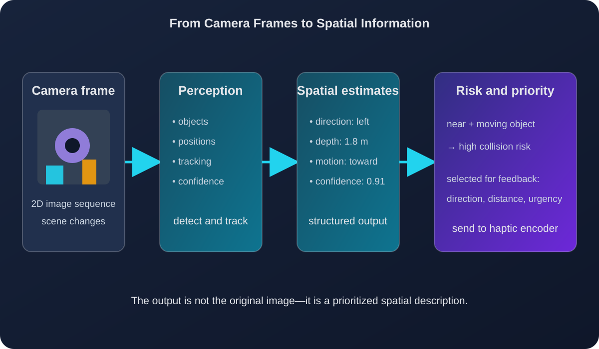

Computer vision
Understanding Visual Information
Computer vision is the first step in a vision-to-haptic assistive system. A camera captures sequential images of the surrounding environment but, these images are not useful to the wearer until they are converted into spatial descriptions. The system makes estimates where objects are located relative to the user, whether they are moving, and if they are a potential risk to the wearer. These estimates become the inputs of the haptic system.
What information does the camera provide?
As previously mentioned, the camera captures sequential two-dimensional image frames. Through these frames, a computer vision system can estimate properties relevant to keeping its wearer safe. For an instance, an object-detection model can identify people, vehicles, furniture, walls, and other potential obstacles. The position and relative height of the object in the image can help estimate the horizontal direction and distance, respectively.
By using sequential frames, direction of motion can also be estimated. As an example as an object becomes larger and more centered, that can indicate an object is approaching the wearer's path. Thus, the system combines object position, depth, estimated direction of motion, and the model's confidence value to estimate the risk of collision. Differing levels of risk will help the haptic feedback device give more precise feedback beyond indicating an object exists in which direction.
The visual output can be represented as structured data rather than as a complete image. For example, one detected object might be represented as
{label: "person", x: 0.25, depth: 1.8, velocity: 0.4, confidence: 0.91}. This example is an abstraction created for this tutorial. The
embedded system can then prioritize the information and determine what should be communicated through vibration
A related architecture is described by Kleinberg et al., who combine camera-based vision with ultrasonic sensing and machine-learning methods to support spatial orientation [1].

Figure 1. Example of the visual information passed from a camera-based perception system to a haptic-encoding system. Diagram created by the author.
Technical method
A simplified vision-to-spatial-information pipeline can be expressed as a sequence of operations. First, the camera captures an image frame. Next, a perception model detects objects and estimates their locations. A depth estimate is obtained from stereo vision, a depth camera, ultrasonic sensing, or an approximation based on object size. The system then compares the current frame with previous frames to determine whether an object is moving. Finally, the system calculates a priority value for each object.
for each camera_frame:
detections = detect_objects(camera_frame)
for object in detections:
direction = estimate_horizontal_position(object)
distance = estimate_depth(object)
motion = compare_with_previous_frames(object)
risk = calculate_collision_risk(
direction,
distance,
motion,
object.confidence
)
if risk > risk_threshold:
send_to_haptic_encoder(
direction,
distance,
motion,
risk
)This algorithm separates perception from feedback. The vision stage produces estimates, while the haptic stage decides how those estimates should be encoded. This separation is important because the same visual information could be communicated differently depending on the application. A navigation device may prioritize collision risk, while a teleoperation system may prioritize surface texture or contact information.
Key takeaway
Computer vision does not directly create a meaningful vibration. It first transforms camera frames into estimates of position, depth, motion, and risk. The next stage uses those estimates to decide which haptic signal will communicate the most important information to the wearer.